The Joy of Sparks
This weekend's IndieWebCamp Düsseldorf featured some Joy Division inspired t-shirts:
@kevinmarks There will be another one tmrrw! ;) +@iwontsignuphere @t pic.twitter.com/jMgpgLasgV
— Joschi Kuphal 吉 (@jkphl) May 6, 2016
@kevinmarks Here you go! :) +@iwontsignuphere @t pic.twitter.com/WGYipwkIQv
— Joschi Kuphal 吉 (@jkphl) May 7, 2016
Which made me think of sparklines again. So, I made a Joy Division inspired graph of activity in indiewebcamp IRC over the last 90 days:  The code is in See IndieNews